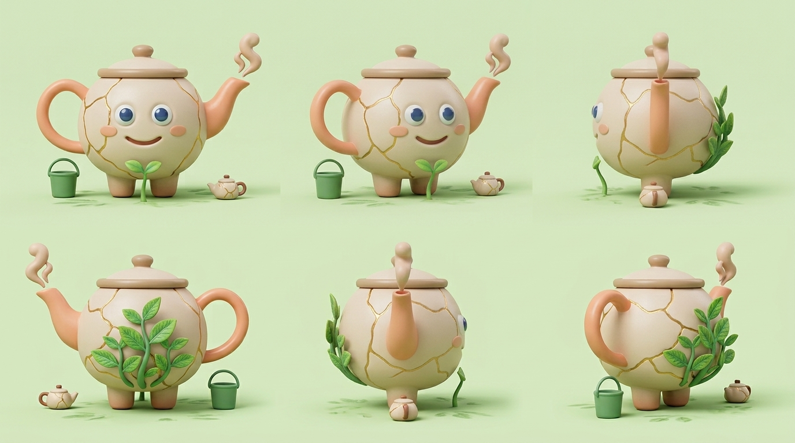
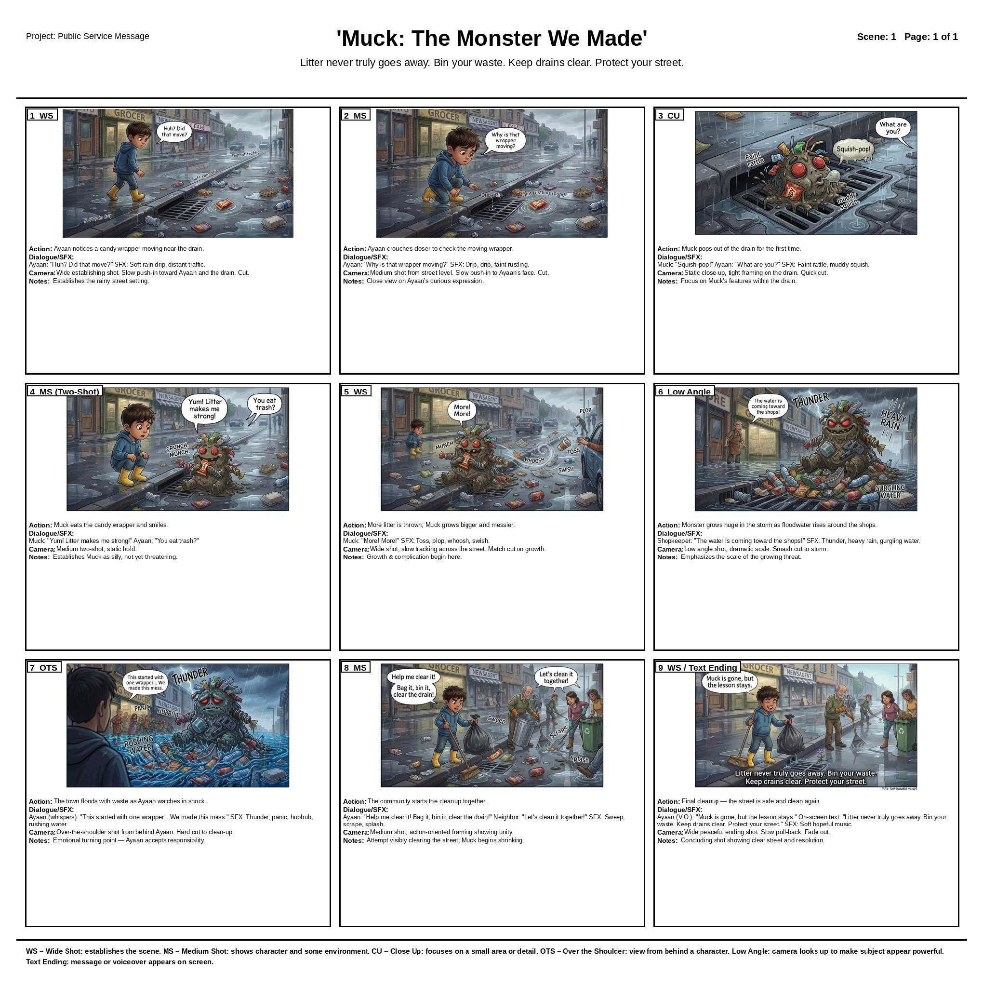
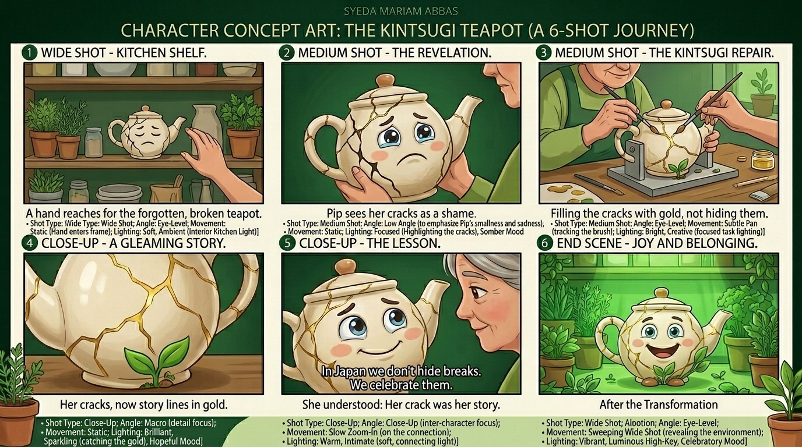
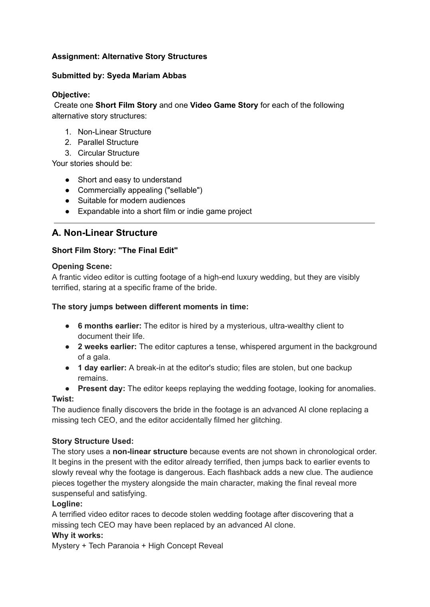
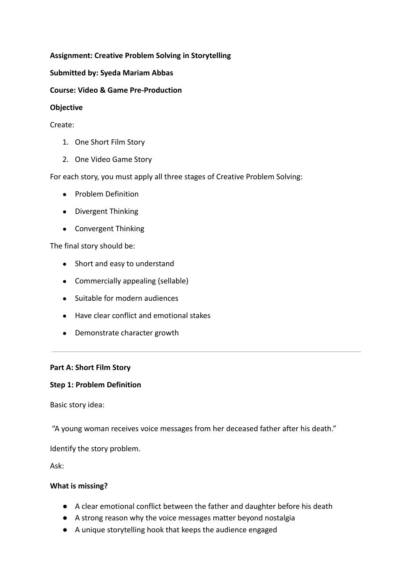
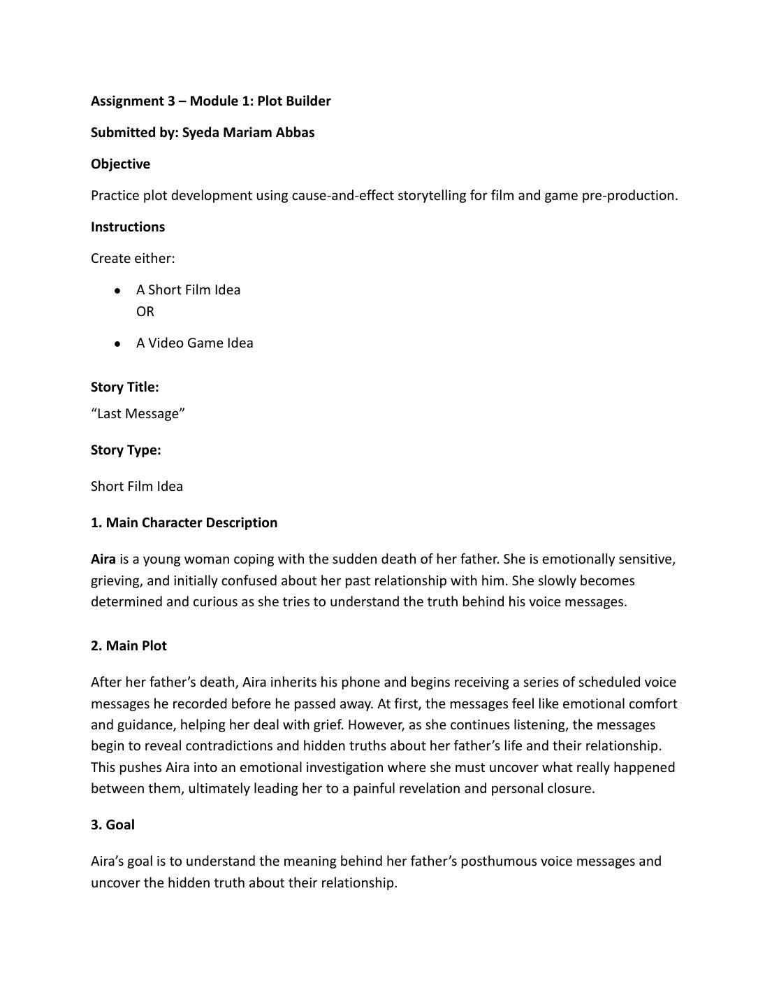
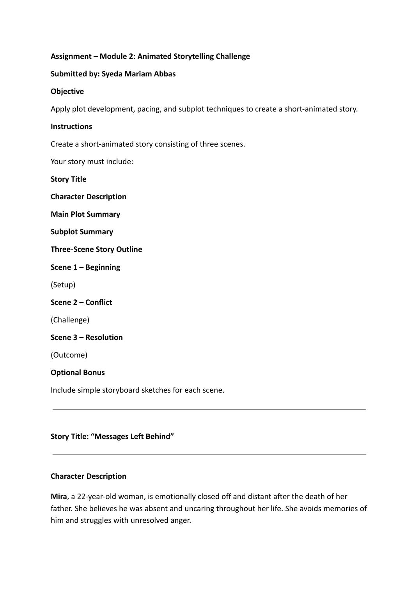

Premise & Logline
Define the player or audience promise, central conflict, social relevance, and the single sentence the project must deliver.
Narrative designer · Pre-production artist
I shape story worlds before production begins — from loglines, character arcs, and branching choices to cinematic boards, mobile game flows, and visual direction.


“A good pre-production document makes the next creative decision easier.”
Selected work
Four projects spanning mobile game design, public-service storytelling, character development, and cinematic visual planning.

A mobile story-driven adventure where a flying messenger repairs the wind engines holding her home in the sky.
Open case study ↗
A litter creature turns an invisible civic problem into a clear cause-and-effect story.
Open case study ↗
A hopeful public-service message about resilience, repair, and the value carried by visible scars.
Open case study ↗Character ideation and production visualization for an 87-year-old ceramic teapot with a story to carry.
Open case study ↗Pre-production pipeline
A story-first workflow that connects narrative intention with practical visual and gameplay decisions.
Define the player or audience promise, central conflict, social relevance, and the single sentence the project must deliver.
Build cause-and-effect beats, act movement, level progression, branching outcomes, and character growth around the core premise.
Translate beats into shot scale, framing, movement, lighting, sound, transitions, and readable player actions.
Explore turnarounds, 3D blockout intent, spatial composition, set dressing, material cues, and lighting targets for Blender production.
Package the style bible, GDD, pitch deck, UI mockups, and visual references so a production team can move with confidence.
Production studies
Selected screenshots reframed as production references for character modeling, environment blockout, set dressing, and lighting exploration in Blender.

Assignments 01–04
Foundational studies in alternative structures, creative problem solving, cause-and-effect plotting, and short-form animation.

Non-linear, parallel, and circular concepts for film and games.
View PDF ↗
Divergent and convergent thinking applied to emotional story hooks.
View PDF ↗
Cause-and-effect plotting around grief, memory, and reconciliation.
View PDF ↗
A three-scene animated story with main plot, subplot, and payoff.
View PDF ↗About & contact
I’m Syeda Mariam Abbas, a pre-production and narrative designer focused on emotionally clear stories, readable visual direction, and production-ready documentation for games and animation.
My work combines writing, story design, art direction, AI-assisted concept exploration, and Blender-minded production planning — always with human judgment and a strong thematic core.
Add your preferred email and other social links in this section before publishing; the included README shows exactly where.